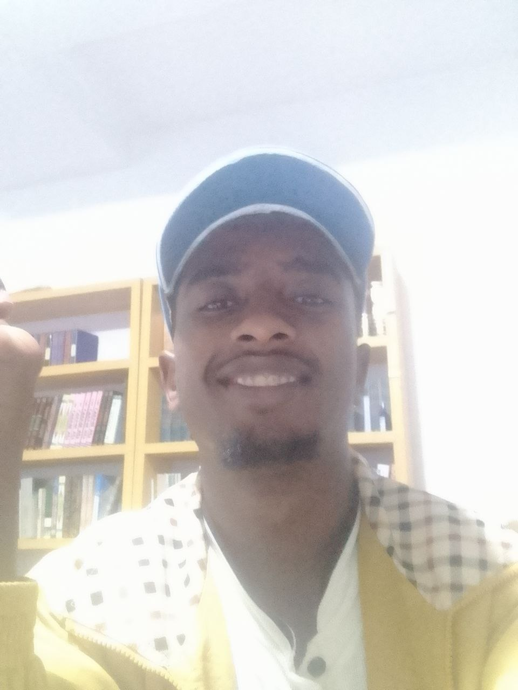

My Biography & Background

My name is Nurhasen Mohammed Ebrahim. I completed my secondary education in the Natural Science stream at KSS before pursuing my undergraduate degree in Software Engineering at AASTU.
I focus on practical problem-solving using fundamental technologies like HTML, CSS, Vanilla JavaScript, and Linux operating systems (specifically Fedora Linux).
Core Academic Coursework
- Internet Programming
- Data Communications & Computer Networking
- Database Systems & Digital Logic Design
- C++ Programming & Microeconomics
Personal Values
- Integrity & Discipline
- Working consistently toward goals while doing what is honest and right.
- Community Development
- Participating in neighborhood initiatives, local cleanups, and educational volunteering.
- Continuous Learning
- Maintaining curiosity in technology and software architecture every single day.
Inspirational Quotation
"The journey of a thousand miles begins with a single step."
— Lao Tzu